Der letzte Hotelwechsel! Das letzte Mal die Koffer packen! Ich nehme ein letztes Bad in Japan (das nächste Hotel hat leider keine Wanne). Dann quetsche ich all mein Hab und Gut in meinen Handgepäckskoffer, und den dann in den großen Reisekoffer. Mein Rucksack ist mit allem gepackt, was ich griffbereit haben muss. Regenmantel, Sonnenschirm, Kopfhörer, Powerbank, eine Flasche Jasmin-Tee, die beiden Kerlchen und die absurd teuren Shinkansen-Karten für die nächsten vier Stunden.
Wir fallen praktisch vom Hotel in den Vorstadt-Zug, der uns über eine riesige Brücke von Shikoku zurück zur Hauptinsel Honshu bringt. Wir kommen in Okayama an und haben nur wenig Zeit, um unseren Shinkansen zu finden. Trotz Stress, weil wir das Gleis erst nicht finden, läuft alles reibungslos. Nichts hat Verspätung. Unglaublich (scheiß DB, die mir den Stress vor Zugreisen beigebracht hat).
Wir fahren ungefähr zwei Stunden. Die Sitze sind riesig und super bequem. Wir haben extra Fensterplätze auf der linken Seite gebucht, um den Fuji zu sehen. Dass diese Plätze in der 1. Klasse liegen, hilft natürlich auch noch mal beim Reise-Komfort. Die ganze Zeit halte ich Ausschau nach ihm, doch wir fahren wieder und wieder durch Tunnel. Irgendwo, weit in der Ferne, muss er doch sein! Noch ein Tunnel und dann – bäm! – taucht er urplötzlich riesig groß auf. Er ist so nah, und wir fahren in einem großen Bogen um diesen majestätischen Berg herum. Auch wenn ich ihn bei dem ersten Urlaub schon einmal gesehen habe, bin ich wieder beeindruckt. Kein Wunder, dass dieser Vulkan das Symbol für Japan ist.
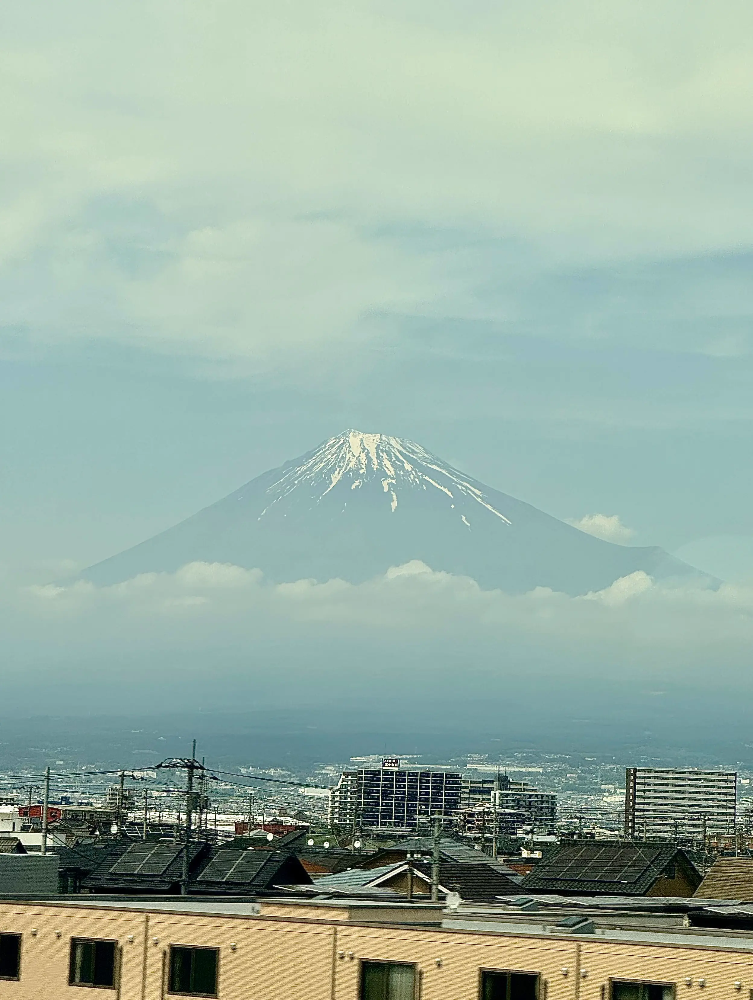
Glückselig mampfe ich mein Lunchpaket. Reisen in Japan macht wirklich Spaß.
Was allerdings keinen Spaß macht (mega-Überleitung, ich weiß), das ist Reisen in Tokio. Es ist voll. Wobei "voll" eine Untertreibung ist. Menschenmassen schieben sich durch die U-Bahn-Gänge, und unsere großen Koffer helfen nicht dabei, gut voranzukommen. Mamas Hüfte ist in den letzten Tagen nicht gut, und so suchen wir ewig nach einer Rolltreppe in die richtige Richtung (irgendwie führen alle nur von den Gleisen hoch, nicht zu den Bahnen hinunter) oder wenigstens nach einem Fahrstuhl. Barrierefreiheit existiert in Tokio schlichtweg nicht.
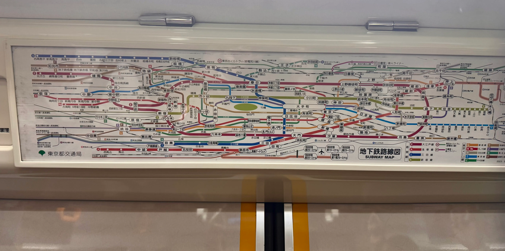
Irgendwann hilft uns eine junge Japanerin, die richtige Bahn nach Roppongi zu finden, wo unser Hotel liegt, und irgendwann, nach viel Geschleppe, vielen Treppen und noch mehr Menschen, kommen wir endlich im rem Roppongi an. Es ist dieselbe Kette, mit der wir bereits in Kagoshima gestartet sind, was ein schöner Bogen für unsere Reise ist. Es ist sauber, modern, und die Lobby riecht nach Jasmin.
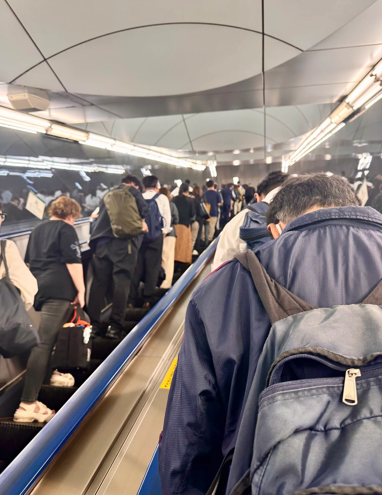
Zum Glück können wir direkt einchecken. Ich habe extra bezahlt, um Blick auf den Tokio Tower zu haben und werde nicht enttäuscht. Ich öffne die Tür zum winzigen Zimmer, und direkt vor uns ist der rot-weiß-gestreifte Turm, der geformt ist wie der Eiffelturm. Davor drängen sich diverse andere Hochhäuser aneinander. Wolkenkratzer reichen bis zum Horizont, und tief unter uns ist, eingeschlossen zwischen den Hochhäusern, ein altes Holzhaus (ein Tempel?) mit einem Teich, in dem Koi-Karpfen schwimmen. Zwei Gegensätze, direkt nebeneinander.
Das Zimmer ist zwar klein, hat aber als eines der wenigen Möbelstücke einen riesigen Massage-Stuhl. Das ist zwar ein bisschen lächerlich (Warum braucht ein Zimmer mit 15 m² einen Massage-Stuhl??), doch ich rieche schon, dass er uns nach den 20 k Schritten noch gute Dienste erweisen wird.
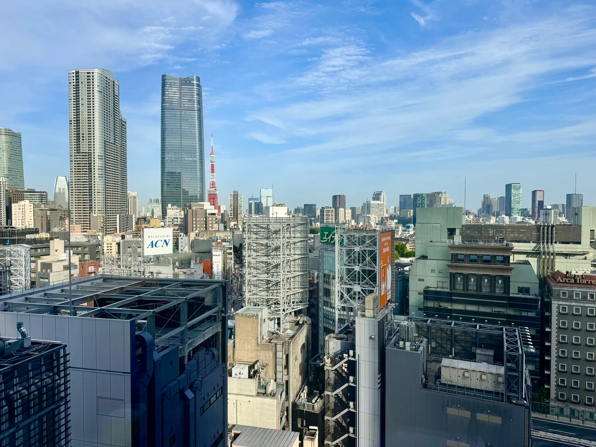
Doch noch nicht jetzt! Denn jetzt schmeißen wir uns erst mal in den Trubel. Unsere kostbare Zeit will genutzt werden: Die drei Tage in Tokio sind reserviert für – na? – Shoppen! Nirgends kann man so gut shoppen wie hier. Außer in Fukuoka vielleicht. Vom letzten Besuch erinnere ich mich an meine Lieblings-Mall, das Lumine Est, das in Shinjuku liegt, einem der it-Viertel Tokios.
Eine riesige Baustelle macht uns den Weg von der U-Bahn-Station zu der Mall schwer, aber letztendlich schaffen wir es. Um Punkt sechs Uhr sind wir an der berühmten Kreuzung in Shinjuku, an der auf einem gebogenen Screen riesig groß Videos einer animierten Katze laufen. Zur vollen Stunde gehört diese Werbefläche fünf Minuten lang ihr, und in diversen kurzen Spots spielt sie, putzt sich und bewirbt das 3D-Design dieses Screens. Natürlich alles mit Ton.
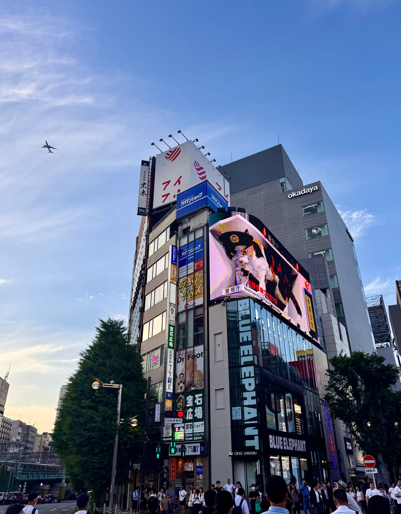
Um uns herum blinkt alles, Werbung wird laut abgespielt, Massen an Menschen bestaunen ebenfalls die Shinjuku-Katze und das bunte Treiben. Mama ist direkt reizüberflutet, und ich kann es ihr nicht übel nehmen. Also laufe ich "schnell" durch die Mall. Ich hätte mir gerne mehr Zeit genommen, aber letztendlich bin ich auch kaputt und führe meine Mutti sicher zurück in unser Hotel. Im Gepäck habe ich natürlich ein, zwei Dinge, die ich im Lumine Est ergattern konnte. Der Ausflug war also nicht umsonst.
Als Stärkung vor der U-Bahn gibt es einmal Dangos, klebrige Reismehl-Bällchen am Spieß mit süßer Sauce. Dann geht es komplett unterirdisch den gesamten Weg zurück zur Station. Halb Tokio scheint untertunnelt zu sein, nur damit man den Verkehr an der Oberfläche umgehen kann. Auch unterirdisch gibt es Läden – zum Beispiel einen, der nur Kleidung für Hunde verkauft. Schließlich kommen wir so zum Hotel, praktisch ohne noch mal auf die Straße zu müssen. Mama geht schon einmal hoch aufs Zimmer, ich ergattere noch Abendbrot und ein Bier, das wir auf dem Zimmer mit Blick auf den Tokio Tower genießen.
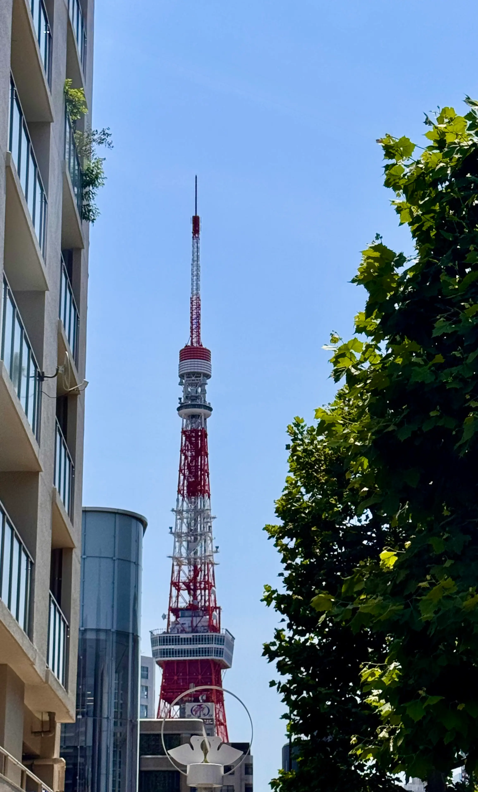
Der Schlaf in unserem winzigen Zimmer ist gut, und der Morgen ist noch ein kleines Bisschen besser, wenn man ihn in einem Massage-Stuhl mit Blick auf den Tokio Tower verbringt. Aber, wie bereits geschrieben, wir sind nicht zum Spaß hier. Also geht es direkt los, den Weg zur Mori Kunstgalerie auszukundschaften, wo wir morgen hinwollen. Das ist eine moderne Galerie im 56. Stock. Das heißt, neben den wechselnden Ausstellungen kann man vor allem einen wunderbaren Blick auf die Metropole genießen. Wir laufen eine Viertelstunde zur Mori, nur um dann festzustellen, dass es nicht die Kunstgalerie Mori ist, sondern das Super-Reichen-Viertel Mori.
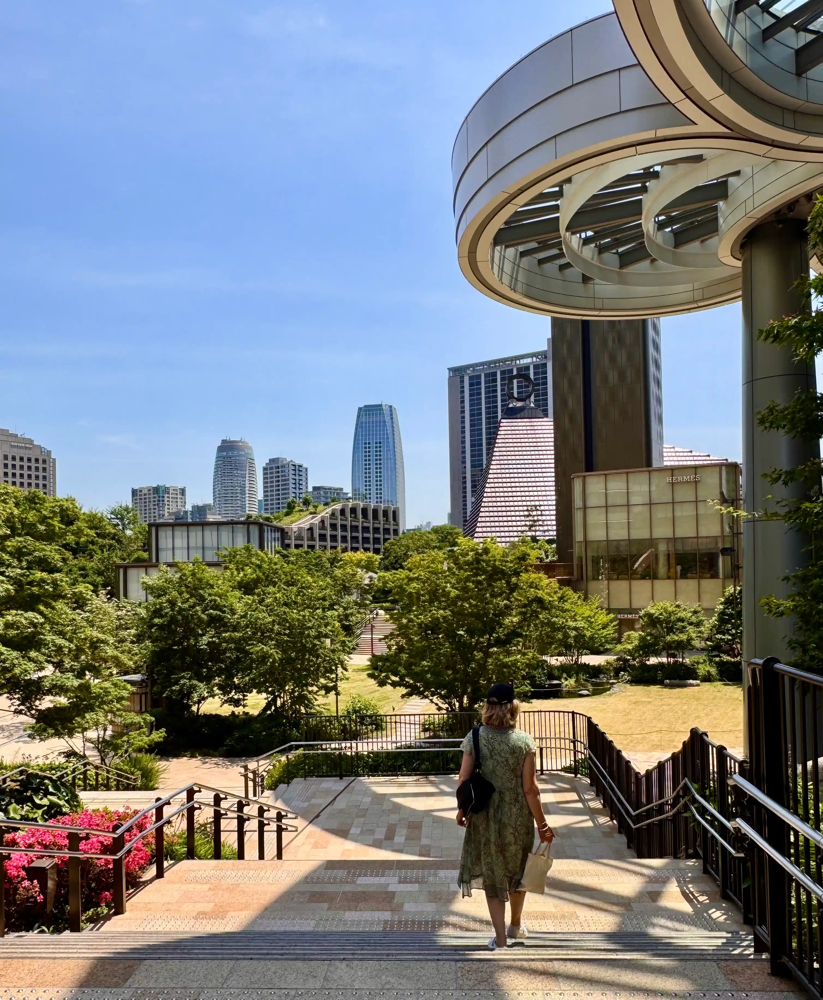
Wir genießen kurz die Klimaanlage in einem der Hochhäuser, in denen Banken, Luxusgeschäfte und Büros ihren Platz finden. Die Häuser schließen eine Art Garten in ihrer Mitte ein, der auf mehreren Ebenen begrünt ist, und durch den sogar ein kleiner künstlicher Bach fließt. Das ganze Areal ist bepflanzt und wirkt wie eine utopische Vorstellung einer Metropole. Nach drei Mal Abbiegen weicht sie aber wieder den üblichen anonymen Wolkenkratzern, 7/11s und kleinen Läden. Japaner in Office-Kleidung kommen uns entgegen und wir laufen lange an riesigen, erstaunlich wenig befahrenen Straßen entlang.
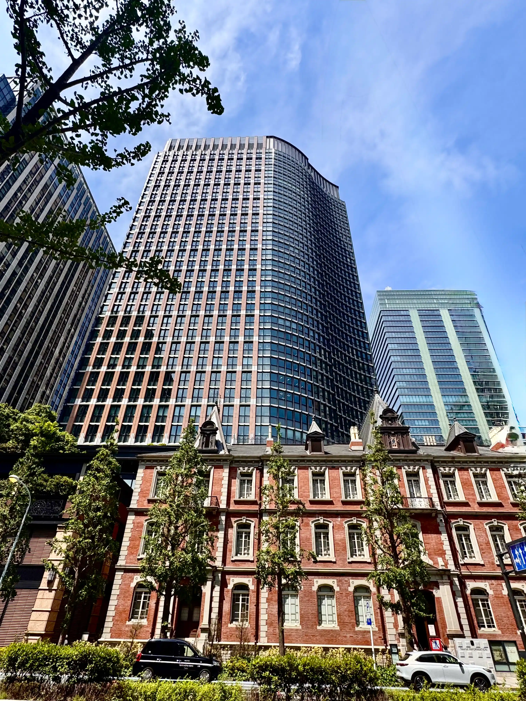
Der Weg ist anstrengend, aber endlich – endlich – kommen wir an unserem Ziel an: dem Kaiserpalast mit dem anliegenden Garten. Wir schlappen uns über den heißen Schotterplatz hin zu dem dunklen Haupthaus, das hinter einer dicken Mauer verborgen ist. Nur um festzustellen, dass die gesamte Anlage heute wegen Staatsbesuch geschlossen ist. Die Stimmung sinkt rapide.
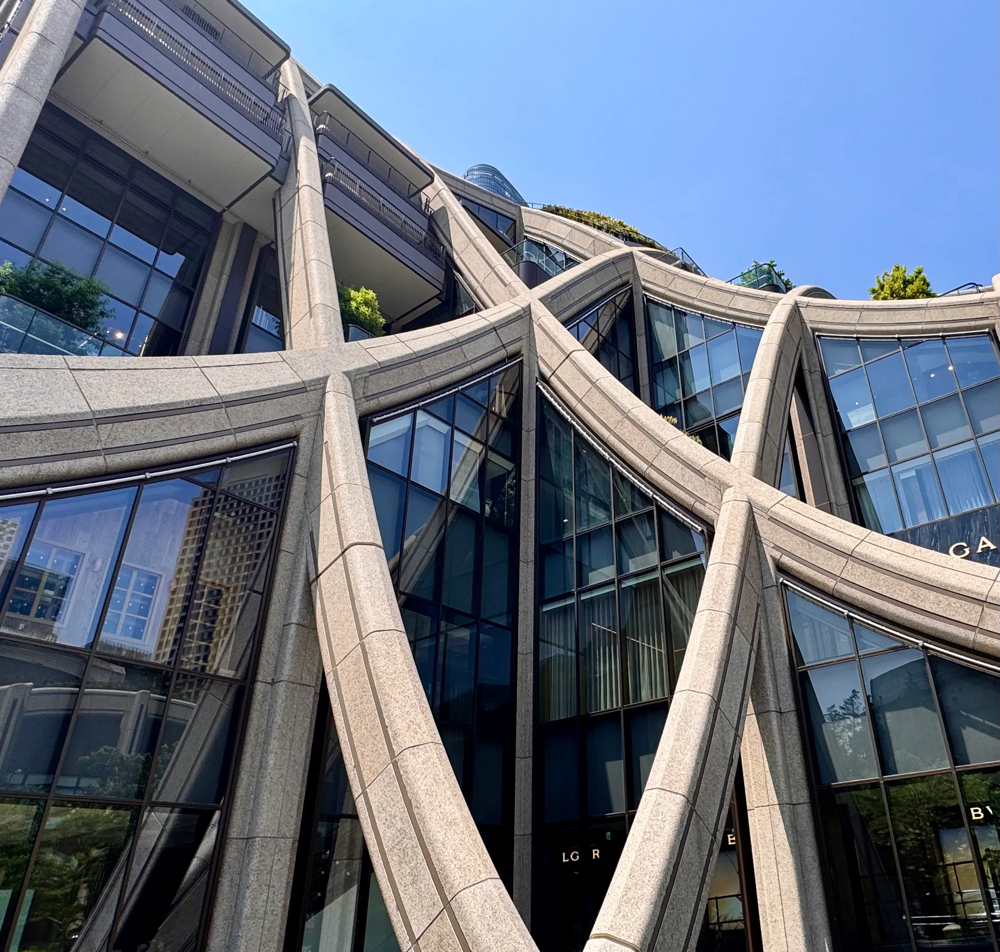
Um der Überanstrengung zu entkommen, legen wir uns unter Pinien in einen nebenliegenden Park. Riesige Ameisen laufen über das Tuch, auf dem Mama sich hinlegt. Ich ziehe meine Schuhe aus und lese ein bisschen. Mitten im Park, mitten in der Mega-Stadt. Touristen und Einheimische picknicken, eine Gruppe Jugendlicher übt den Handstand und Radschlag. Ich kaufe ein Softeis für uns beide, und dann geht es weiter.
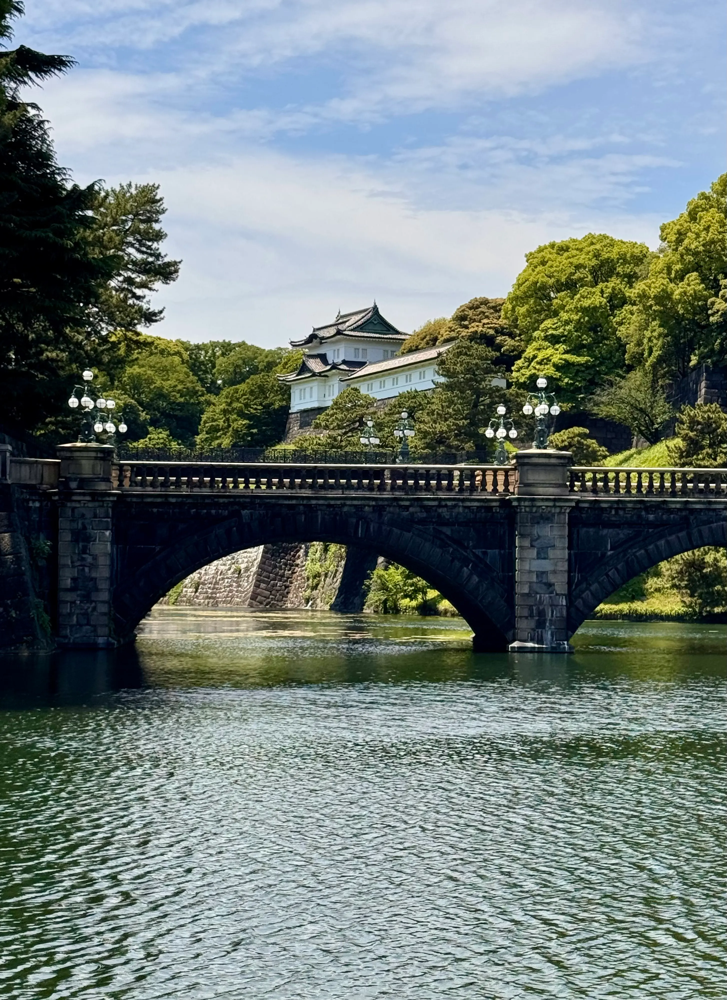
Auch zum nächsten Ziel wird gelaufen: Es ist die Character Street, eine unterirdische Shopping-Street bei der Tokio Station, einer von Tokios Hauptbahnhöfen. Dort gibt es Läden zu allen möglichen Anime- und Manga-Serien, aber auch zu beliebten Maskottchen und natürlich auch für die Sumikko Gurashi, meine Lieblinge. Der Laden ist klein – scheinbar sind die Kleinen nicht mehr so in Mode –, aber ich kaufe trotzdem ein paar Dinge. Ein neues Outfit, einen kleinen Taschenanhänger, in den einer der Kerlchen Platz findet und den restlichen Tag das bunte Treiben beobachten kann, und einen kleinen Notizblock. Auch die anderen Läden der Character Street protzen nur so vor Niedlichkeit. Alles, was man sich vorstellen kann, gibt es in jeglichem Branding.
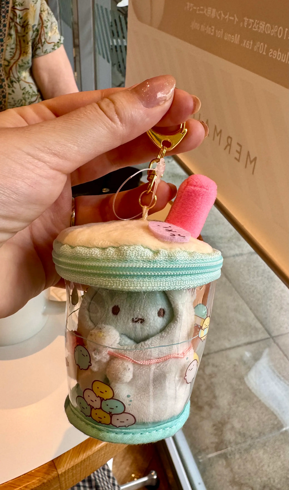
Wir schauen uns noch ein bisschen weiter um, doch ich bin ein kleines bisschen enttäuscht. Der Sumikko Gurashi-Laden war eines meiner Highlights, und irgendwie hatte ich mir mehr erhofft. Also lässt Mama sich erweichen und wir fahren noch zu einem weiteren Laden. Dieser liegt in Sunshine City, einer Mall aus den 60er Jahren. Der Weg dahin dauert ungefähr eine halbe Stunde, aber in der U-Bahn können wir sitzen und uns ein bisschen ausruhen. Insgesamt laufen wir ewig viel in Tokio, ohne wirklich etwas zu schaffen, einfach weil alles durch die schiere Größe der Stadt so weit auseinander liegt.
Dementsprechend kippt die Stimmung auch immer wieder leicht. In Sunshine City kauft Mama sich endlich auch ein bisschen Kleidung, bevor ich in dem Spielwarenladen mit den Sumikko Gurashi-Sachen verschwinde. Auch hier werde ich natürlich fündig und kaufe sogar noch Souvenirs. Mama, die indessen einen Platz gefunden hat, wo sie auf dem Handy ihre Serie guckt, zeigt mir auf dem "Marktplatz" der Mall eine Boygroup, die gerade ihren Auftritt hat. Es ist schrill, laut und auch ein bisschen witzig, aber Fans haben sich versammelt und jubeln den Männern zu.
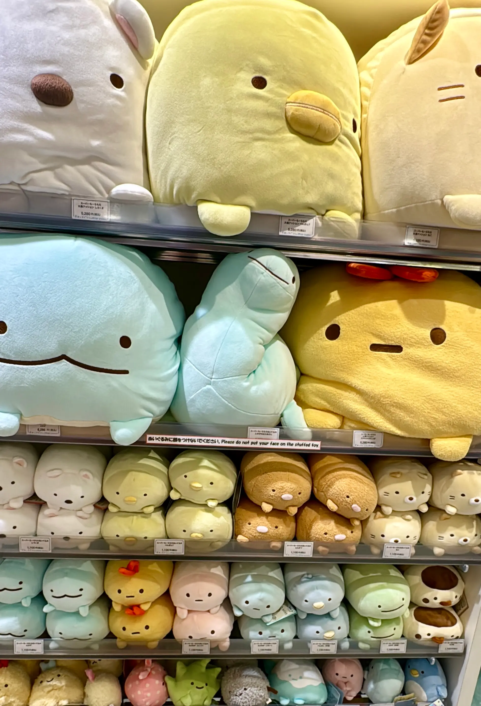
Schließlich finde ich noch ein schönes Unterwäschegeschäft, das ich bereits aus unserem ersten Urlaub kenne, und einen Schmuckladen, in dem Privatpersonen ihre Kreationen verkaufen können. Mama findet leider nichts, die Hüfte und der Kopf sind schlecht, und so holen wir uns unser Abendbrot noch vor der langen Fahrt zurück ins Hotel in einem Family Mart.
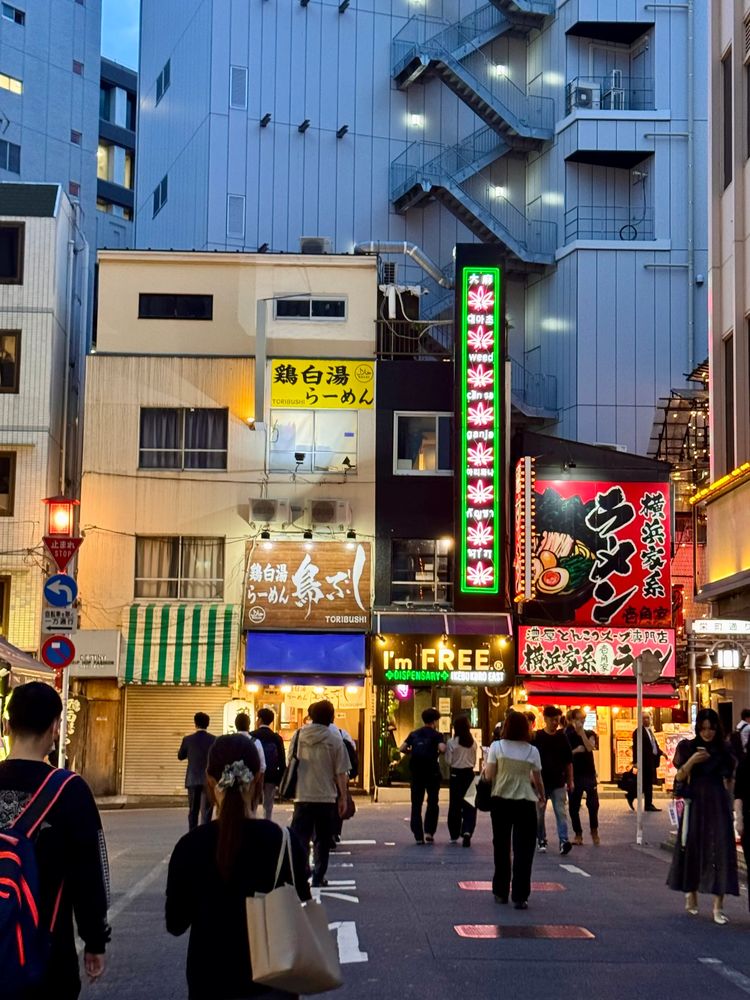
In manchen dieser Conbinis kann man nämlich das Essen direkt vor Ort essen. Dieser hier hat einen netten Blick auf die Fußgängerpassage, und wir können all die Leute beobachten, die herausgeputzt shoppen gehen, in Schuluniformen mit Freunden herumblödeln oder in Anzug oder langem Rock von der Arbeit nach Hause hetzen.
Im Hintergrund schreit einer der Angestellten unentwegt Werbung für die heruntergesetzten Chicken Sandwiches und wünscht allen Käufern mit der Lautstärke eines startenden Sportwagens einen guten Appetit. Richtig entspannend ist das nicht, aber das Essen schmeckt, und natürlich gibt es zum Nachtisch unser Lieblingseis. Schließlich können wir den Rückweg nicht weiter herauszögern und werden wieder Teil der unaufhaltsamen Masse Menschen. Wir schieben uns durch die Straßen, die U-Bahn, die Schranken am Ausgang. Schließlich kaufe ich uns wieder einen Drink bei dem lokalen 7/11, und Mama heizt schon mal den Massage-Stuhl vor. Ein weiterer Tag in Tokio neigt sich dem Ende entgegen. Nur noch einer bleibt.
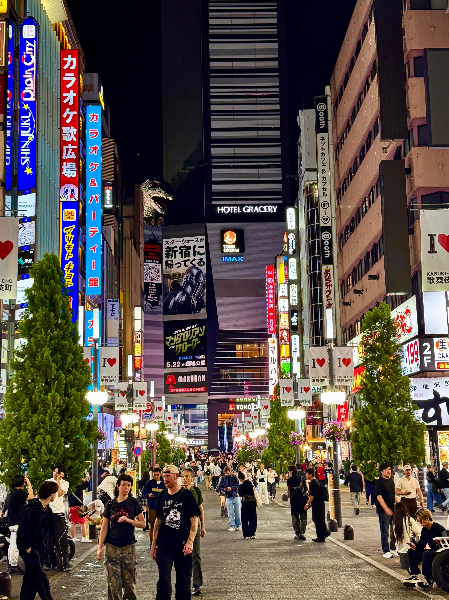
Nach fast zwei Wochen in Japan ist es an unserem letzten Tag so weit: Es regnet. Dass es gerade in Tokio regnet, ist allerdings das beste Outcome, das wir hätten haben können, denn hier kann man schließlich bei jeglichem Wetter irgendetwas unternehmen. In Malls gehen zum Beispiel. Warte, was? Das steht heute gar nicht auf dem Plan? Sondern wir wollen tatsächlich eine Unternehmung draußen machen? Verdammt.
Noch dazu kommt, dass mein Magen heute nicht gut ist und ich nicht mal etwas zum Frühstück essen kann. Umso besser ist, dass wir auf einen Fischmarkt gehen. Mit vielen Menschen, vielen Sinneseindrücken und natürlich auch vielen Gerüchen.
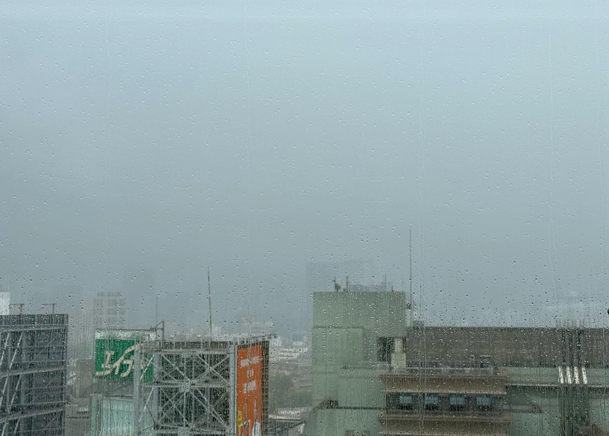
Wir starten früh in den Tag und kommen dennoch erst am Markt an, als er schon seit über drei Stunden geöffnet ist. Wenn wir nämlich pünktlich zum Start hätten da sein wollen, dann wäre das um fünf Uhr gewesen.
Inzwischen ist es – wie überall in Tokio – voll. Wir sind ein bisschen überfordert, wagen uns mit unserem Schirm einmal durchs Gemenge auf der Suche nach Frühstück – und stellen dann fest, dass wir kein Bargeld mehr haben. Also auf zum nächsten 7/11, weil es dort immer Geldautomaten gibt. Der nächste ist nur einen Katzensprung vom Markt entfernt und neben Bargeld hole ich mir einen warmen Jasmin-Tee in der Flasche und einen kalten Matcha-Tee im Becher.
Noch am Strohhalm schlürfend gehen wir zurück in das Gedränge. Der Fischmarkt ist kein klassischer Markt mit abbaubaren Ständen, sondern besteht eher aus vielen, winzig schmalen Häusern, die sich aneinander drängen und nur durch schmale Gassen voneinander getrennt sind. Als Maßstab: Es passen ungefähr 2,5 Leute mit Regenschirm gleichzeitig durch die Straßen. Vor jedem Laden stehen Tische aufgebaut, die zeigen, was verkauft wird (Essen, Keramik, Nippes und Souvenirs). Dementsprechend ist es laut, unfassbar voll, überall liegen tote Fische und Meeresfrüchte, große Krabbenarme strecken sich über die Ladentische hinaus, Schirme stoßen an meinen Kopf und andere Touris rempeln uns an.
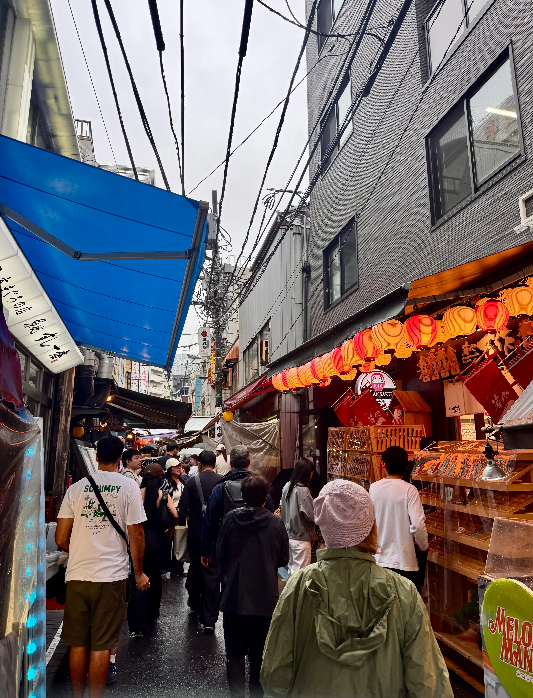
Mama hatte vorher rausgesucht, dass es hier eine sehr gute Messer-Manufaktur gibt, der wir natürlich einen Besuch abstatten. Wir stolpern in den Laden, klappen unsere Schirme ein und gucken uns die Ware an.
Messer in jeglicher Form und Größe hängen an den Wänden des kleinen, schmalen Ladens, in dem weiter hinten ein Mann die besagten Messer schleift. Ein älterer sitzt vorne und graviert gerade Namen in bereits gekaufte Stücke ein – eine Dienstleistung, die sie hier anbieten, personalisierte Messer. Wir überlegen nicht lange, bevor wir uns ein Messer kaufen. Es ist zwar ein eher kostspieliges, aber auch besonderes Mitbringsel. Das Schleifen und Eingravieren unserer Namen dauert ein wenig, und der junge Verkäufer erklärt uns, dass wir in der Zwischenzeit gerne noch ein wenig über den Markt schlendern können.
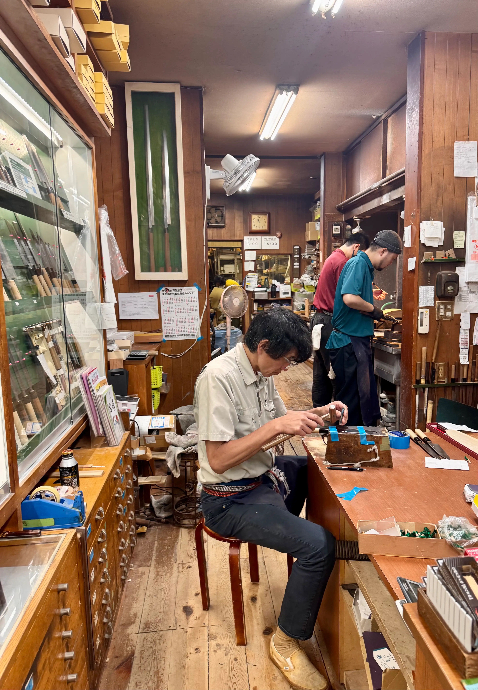
Das bedeutet für uns: Endlich ein bisschen frühstücken. Es gibt ein besonders saftiges Omelett von einem scheinbar sehr beliebten Stand, denn die Schlange geht ordentlich abgesteckt einmal um den Laden herum und weiter in die nächste Nebenstraße. Das Warten lohnt sich allerdings, das Ei ist wirklich lecker, selbst wenn mein Magen immer noch nicht so auf der Höhe ist.
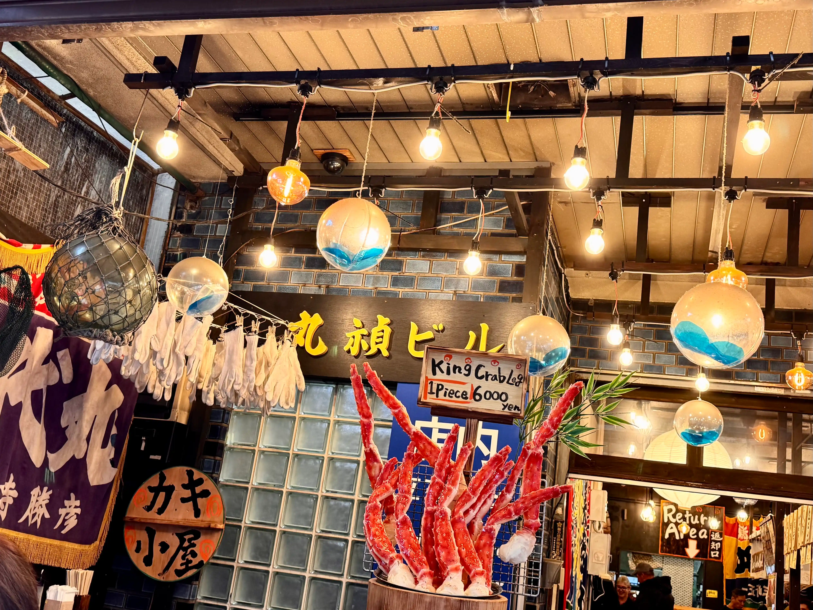
Mit unseren neuen Schätzen in der Tasche erkunden wir die vielen kleinen Gassen noch weiter (ja, es fühlt sich komisch an, mit bis zum Erschöpfen geschärften Messern einfach so durch Tokio zu laufen).
Schließlich enden wir unsere Entdeckungstour an einem Stand, der Mochi und Ichigo Daifuku in allen möglichen Geschmacksrichtungen anbietet. Neben den üblichen süßen gefüllten Reiskuchen (Mochi) sind Daifuku ihre elegantere Schwester: Die Mochi sind aufgeschnitten und als kleine Krone sitzt meist eine Erdbeere – auf Japanisch Ichigo – oben auf dem Daifuku. Also: Ichigo Daifuku.
Die Füllung bei diesem Stand reicht von der klassischen roten Bohnenfüllung über Sahne-Creme, Yuzu und Erdbeere bis hin zu Karamell und Schokolade. Mama und ich kaufen uns erst eins, dann noch zwei und schließlich weitere zwei, natürlich nur als Souvenir.
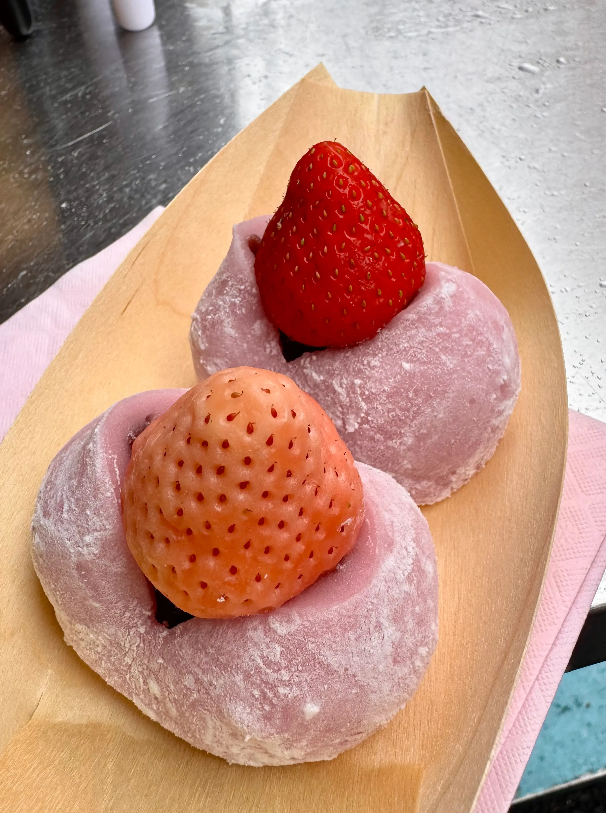
Da das als Mittagessen natürlich nicht reicht, bugsiert Mama ihre magenkranke Tochter in ein Nudelsuppen-Restaurant am Rand des Markts. Nach ungewöhnlich langer Wartezeit kommen riesige Schalen mit warmer Suppe mit Inari Tofu. Ich weiß, noch ein neues Wort, aber eigentlich ist es "nur" frittierter Tofu. Wirklich, wirklich lecker und scheinbar die Heilung für einen launischen Magen. Danach geht es mir spontan besser und ich bin erleichtert, dass ich die letzten 1,5 Tage in Japan nicht brechend im Hotelzimmer verbringen muss.
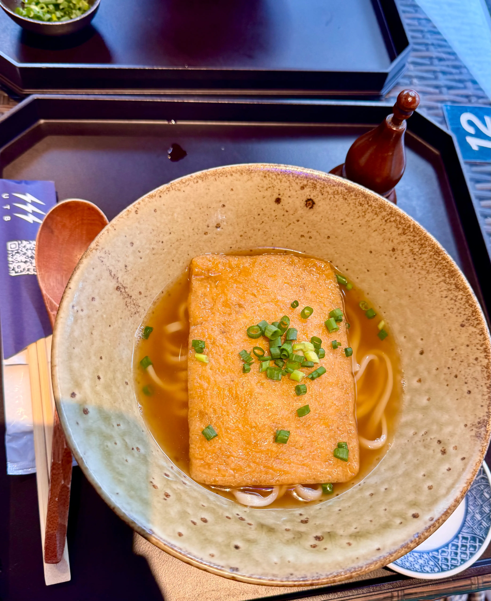
Dennoch fahren wir einmal dorthin zurück, einmal um uns nach der Sinnesüberflutung vom Markt auszuruhen und einmal, um den Regen etwas abzuwarten. Nach einer Mittagspause geht es zur berühmten Mall Shibuya 109. Ursprünglich eher ein Szene-Kaufhaus ist es jetzt die Mall Tokios.
Jeder der kleinen Läden innerhalb des Kaufhauses zeichnet sich durch eine bestimmte Ästhetik aus und oft sind sie nach Stilrichtungen geclustert: Es gibt einen Bereich für chic, für kawaii (süß), für Goth, Punk, Gyaru… Als Einkäuferin treibt man so von Modewelt zu Modewelt, mal rüschig, mal schrill, mal cool, mal spießig. In fast jedem Laden werde ich als Westlerin von einer freundlichen Verkäuferin begrüßt, die mir das übliche "Only one sizeeee" entgegenwirft. Ich weiß. Auch in den letzten 100 Läden gab es nur XS als "Größe, die allen passt". Hosen oder Röcke kaufen wird hier also nix, aber dafür finde ich Oberteile und Accessoires.
Müde vom Shoppen kehren wir in einem der Lokale im Shibuya 109 ein, das mit extra fluffigen Pancakes wirbt. Es ist erstaunlich ruhig in dem Lokal, und durch die Scheiben können wir all die hübsch gemachten Japanerinnen vorbeilaufen sehen. Viele von ihnen ziehen sich extra kawaii an, sehr süß und rüschig und ein wenig wie kleine Mädchen. Das wirkliche Alter der Frau spielt dabei keine Rolle. Von Zeit zu Zeit wirkt es ein bisschen tacky, aber man sieht, dass sie sich viel Mühe gegeben haben.
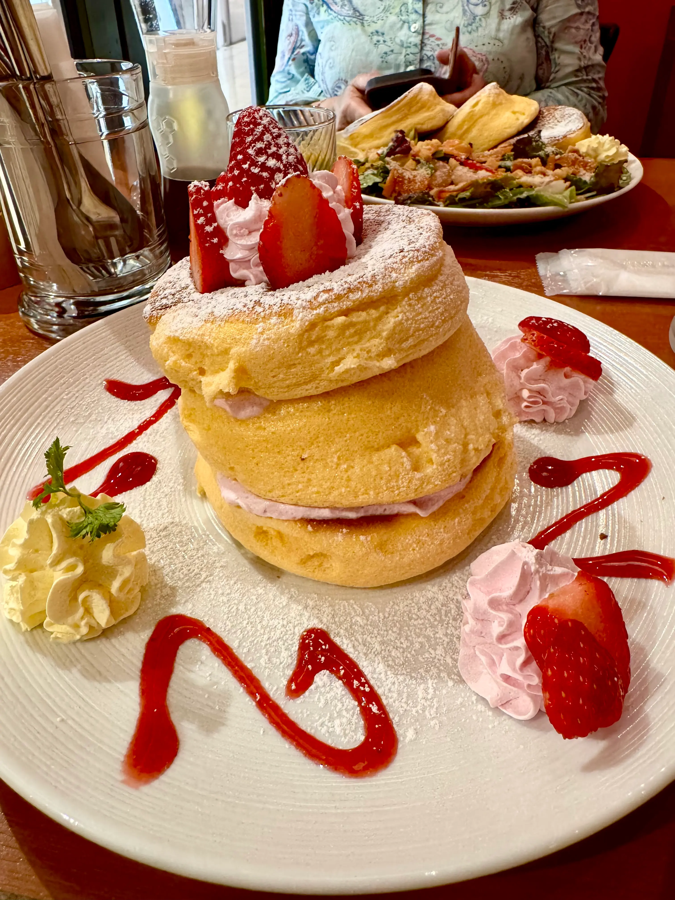
Nach einem letzten, sehnsüchtigen Blick auf all die wunderschöne Mode verlassen wir Shibuya 109 und schlendern durch Shibuya, das Szeneviertel mit der berühmten gigantischen Kreuzung. Die Luft ist ein bisschen raus, deswegen steuere ich nur noch einen Muji an, in dem ich mir einen Schlafanzug kaufe, den ich bereits in Fukuoka gesehen hatte.
Auf dem Weg muss ich mir allerdings die Ohren zuhalten – in dunkleren Straßen oder in Ladebuchten für LKW sind Geräte wie ein Katzenschreck angebracht, die ein permanentes, wahnsinnig nerviges hohes Geräusch abgeben. Hier ist es allerdings nicht gegen Katzen, sondern gegen herumlungernde Jugendgruppen, die vor allem seit den 80ern ein "Problem" für die Öffentlichkeit und das Wohlbefinden der Stadtbewohner sind. Scheinbar zähle ich dazu, denn das Pfeifen lädt mich definitiv dazu ein, den Bereich zu verlassen.
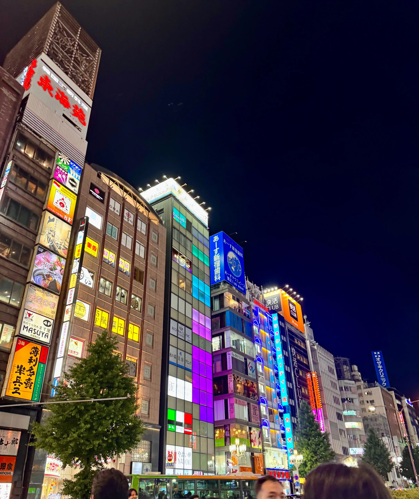
Der Rückweg ins Hotel führt uns natürlich vorbei an der Shibuya-Kreuzung. Nach kurzem Überlegen, ob wir uns das Getümmel antun wollen, überqueren wir sie schließlich doch. Business-Leute hetzen von einer Seite zur anderen und versuchen sich an all den TikTokern, Touris und staunenden Gaijins vorbeizuschieben, zu denen wir natürlich auch gehören. Um uns herum ragen bis zu den Sternen Leuchtreklamen auf, die ständig wechselnde Werbung anzeigen. Ja, es ist einfach nur Werbung. Ja, es ist eine kleine Konsum-Hölle. Aber ja, ich fühle mich wie bei Blade Runner oder Cyberpunk und nein, ich bereue es nicht, diesen Umweg gegangen zu sein.
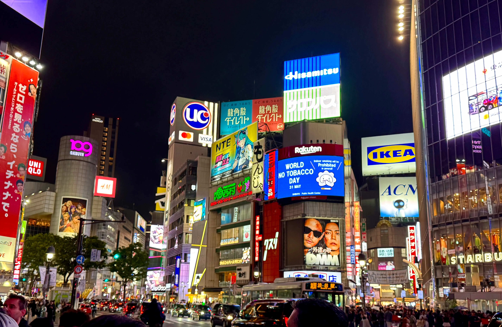
Der Tag endet erschöpft auf dem Massage-Stuhl im Hotelzimmer, der sich endlich bezahlt macht. Während Mama ihn bereits vorwärmt, gehe ich noch einmal "rasch" in den nächstgelegenen Donki und kaufe Souvenirs und Dinge, die ich unbedingt noch mitnehmen muss. Immerhin wird die Zeit knapp. Am Eingang schwimmen Fische in einem riesigen Aquarium und ich muss an mein Aquarium zuhause denken. Nur noch einmal schlafen, dann ist es so weit.
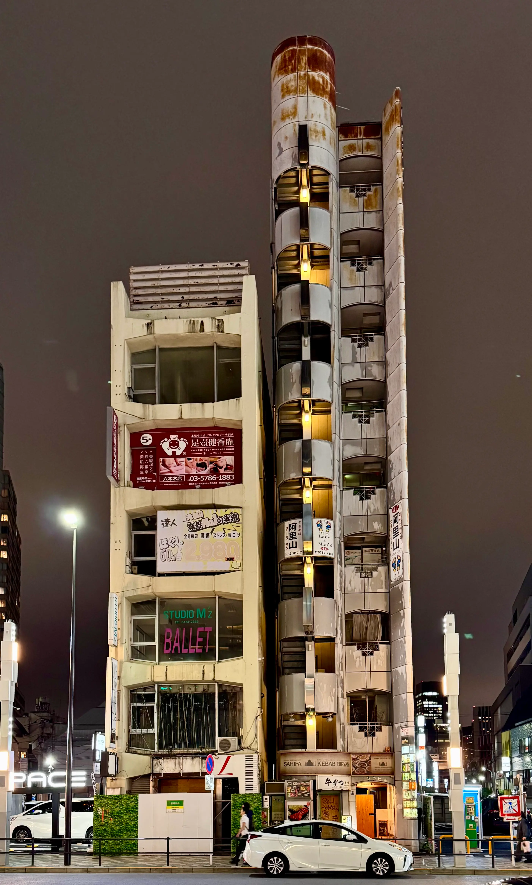
Wehmütig laufe ich alleine durch die bunten Lichter zurück. Im Hotelzimmer gibt es eine letzte kleine Überraschung: Der Tokio Tower hat sich in ein Festgewand geschmissen und glitzert blau und lila statt im üblichen Rot. Doch schließlich endet auch dieser letzte, ereignisreiche Tag.
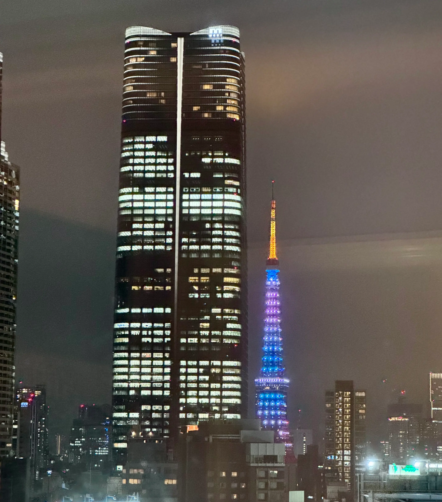
Ereignisreich geht es allerdings direkt los: Über Nacht ist mir eines klar geworden. Ich brauche das Giga-Kerlchen, das ich im Shop in der Tokio Station gesehen habe. Es ist zwar wirklich groß, aber es passt sicher noch in meinen Koffer, und außerdem rette ich es aus dem Laden, wo sich niemand um es kümmert. Also heißt es: Geübt den Koffer packen, schnell fertig machen, und Mama versichern, dass ich pünktlich um 11 zurück bin, um auszuchecken.
Mama hat es leider erwischt, denn sie hat Migräne bekommen. Während sie im Zimmer bleibt, hetze ich von U-Bahn zu U-Bahn. Ich habe etwas mehr als eine Stunde: Eine halbe Stunde hin, eine halbe Stunde zurück, 15 Minuten, um den Laden zu finden und mein Kerlchen zu schnappen. Ich renne Strecken zwischen den Stationen, weil die Wege hier immer länger sind, als man denkt. Ich finde den Laden erst nicht, und als ich es dann geschafft habe, schnappe ich mir meinen neuen Schatz, bezahle ihn und stopfe ihn mithilfe der Angestellten in meine Tasche. Es darf bei meinem Rückweg aus der Tasche schauen und ist bestimmt verängstigt und überfordert von all den neuen Eindrücken und dem Geschaukel. Um fünf vor 11 bin ich wieder im Hotel.
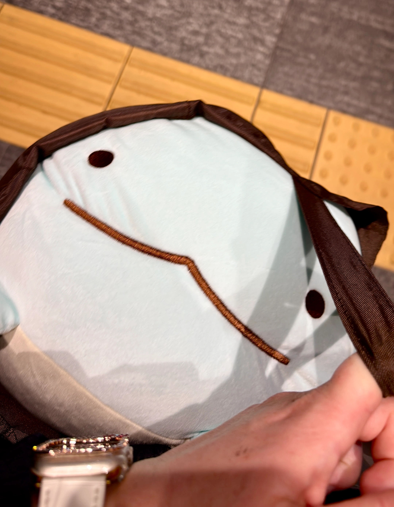
Mama geht es immer noch nicht gut, aber sie wartet bereits in der Lobby. Ich verschnaufe einmal, streichle das Kerlchen und verspreche ihm, dass alles gut wird, und dann darf es sich im Koffer ausruhen.
Wir haben Zeit bis um sieben Uhr abends, um zum Flughafen zu kommen. Also denken wir uns: Heute ist der Tag! Heute gehen wir in die Mori und schauen uns Tokio von oben an!
Im Regen stapfen wir also los, dieselbe Strecke entlang, wie wir bereits an unserem ersten Tag hier gegangen sind. Unsere Schuhe werden nass. Wir halten noch mal kurz bei dem Donki mit dem Aquarium, aber weil Mamas Kopf so schlimm ist, gehen wir nicht herein.
Weiter geht es. Bis... Moment! Den selben Weg, der uns letztes Mal bereits nicht zur Galerie geführt hat? Ganz genau. Wir haben denselben Fehler noch mal gemacht. Und jaaa, ich nehme die Schuld auf mich. Inzwischen sind wir nass und genervt. Mamas Kopf ist immer noch schlecht, und da Zucker bekannterweise hilft, kehren wir auf dem Rückweg zum Hotel in ein Bistro ein.
Wir sitzen im ersten Stock mit Blick auf die Hauptkreuzung, die wir in den letzten Tagen so oft überquert haben, wenn wir von der U-Bahn nach einem langen Tag zurückgekommen sind.
Ich betrachte die Werbung auf dem großen Screen direkt gegenüber, die immer wieder unterbrochen wird von Videos von Grashalmen, die sich im Wind biegen oder seichten Wellen am Meer.
Im Bistro selbst sieht es etwas plüschig aus, mit rosa Teppich und goldlackierten Stühlen. Die Lüftung ist an, und die Luft ist zwar einen Ticken zu kalt, aber immerhin trocknen wir in dem stetigen Luftzug etwas.
Schließlich bekomme ich mein hübsches Kunstwerk, einen gedeckten Erdbeer-Kuchen, und Mama ihr Essen, zum Abschluss noch mal ein echtes, traditionell japanisches Gericht: Spaghetti Napoli. Sogar mit westlichem Besteck.
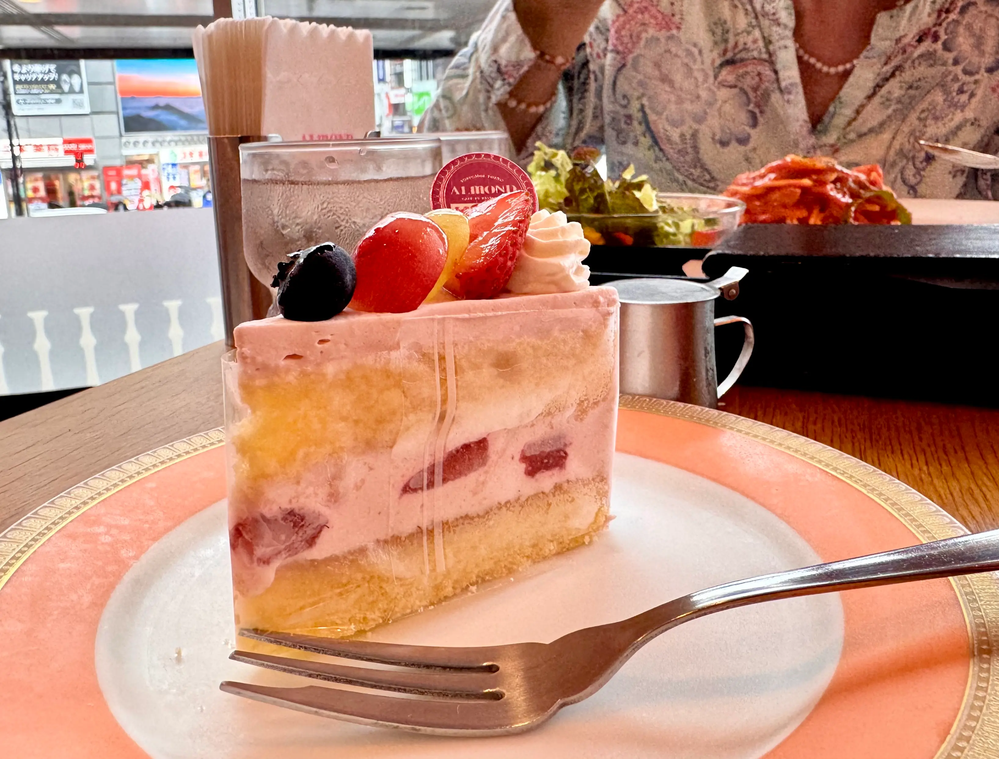
Das Essen heitert die Stimmung auf und wir sehen dabei zu, wie die Tische mit den Salari-men (Büroangestellten) sich neben uns leeren und schließlich von älteren Herrschaften besetzt werden. Wir wissen nicht so recht wohin mit uns, weil wir ständig in dieser Warteposition hängen, in der man nun mal ist, wenn man in zehn Stunden einen Interkontinentalflug bekommen muss.
Schließlich schaffen wir es doch, uns aufzuraffen, nehmen unsere Regenschirme und halb trockenen Jacken und stiefeln wieder zur Mori-Galerie – dieses Mal aber in die richtige Richtung. Wir sehen direkt, dass wir nun wirklich richtig sind, denn vor dem Eingang, der bereits im dritten Stock liegt, baut sich eine riesige, spinnenähnliche Skulptur auf. Sie heißt Maman und hütet seit 99 ihren Platz zwischen dem Mori Tower und dem Roppongi Hills Shopping Center direkt daneben. Im Regen sieht ihr neun Meter hoher Körper noch ein wenig unheimlicher aus, und wir gehen an ihren langen Beinen vorbei in den Eingang des Towers.
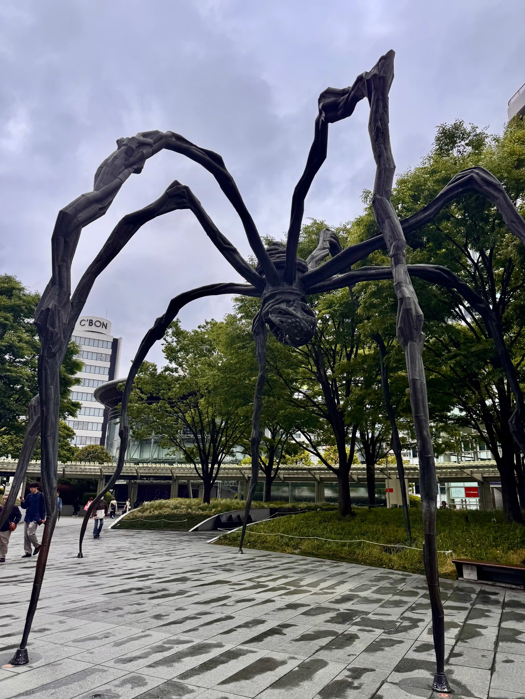
Die Schlange innen ist erschreckend kurz, und schnell merken wir auch, warum. Eine freundliche Angestellte nickt zwar, als wir ihr sagen, dass wir gerne zwei Tickets nach oben hätten, schiebt uns aber unmissverständlich ein foliertes Bild entgegen, das die Sicht bei unterschiedlichen Wetterlagen abbildet. Die Skyline von Tokio bei Sonnenschein, bedeckte Türme nur aus dem Stadtteil bei Roppongi und das deprimierende dritte Bild, eine graue Wand bei Starkregen, durch die nicht mal die Lichter hindurchblitzen. Die Frau tippt auf das letzte Bild und Mama und ich entscheiden uns ziemlich schnell gegen einen Besuch.
Was also jetzt? Unser letzter Plan für heute ist buchstäblich ins Wasser gefallen. Nix mit "noch einmal die Stadt von oben betrachten". Doch Moment! Was ist neben der Mori-Galerie? Genau! Ein Shopping Center! Überdachung und Wärme und die Möglichkeit, ein bisschen Serotonin auszuschütten.
Dieses Center ist allerdings schon auf den ersten Blick gehobener als Shibuya 109 oder Lumine Est. Es ist leerer, die Läden größer und mit weniger Ware ausgestattet. Dafür gibt es hier einzigartige Geschäfte: Zusammenarbeiten mit lokalen Künstlern, Läden, die teure Handseifen verkaufen, Herrenausstatter, ein Buchladen, Parfumläden, in denen eine Flasche über 200 € kostet und – Mamas und mein Favorit – ein Laden, in dem es ausschließlich Taschentücher aus Stoff gibt. Auch wenn wir nichts kaufen, macht es Spaß, noch einmal zu schlendern und zu stöbern.
Im Erdgeschoss gibt es eine Bäckerei, in der wir uns noch ein letztes Mal die japanische Backkunst gönnen. Ich hole mir ein mit Curry gefülltes, dickes Brötchen. Das klingt zwar gewöhnungsbedürftig, ist aber wirklich gut! Spatzen bekommen auch etwas davon ab, und als wir aus dem Center gehen, hat der Regen tatsächlich aufgehört. Es ist immer noch bewölkt, aber ab und zu kommt tatsächlich die Sonne durch. Im Sonnenschein entdecken wir einen kleinen Rosengarten direkt zwischen Galerie und Shopping Center, ebenfalls auf dem dritten Stock. Die Rosen riechen wunderbar und scheinen sich über den Regen gefreut zu haben. Mitten unter ihnen bäumt sich eine riesige Rose aus Metall hinauf, die mindestens so groß ist wie "Maman".
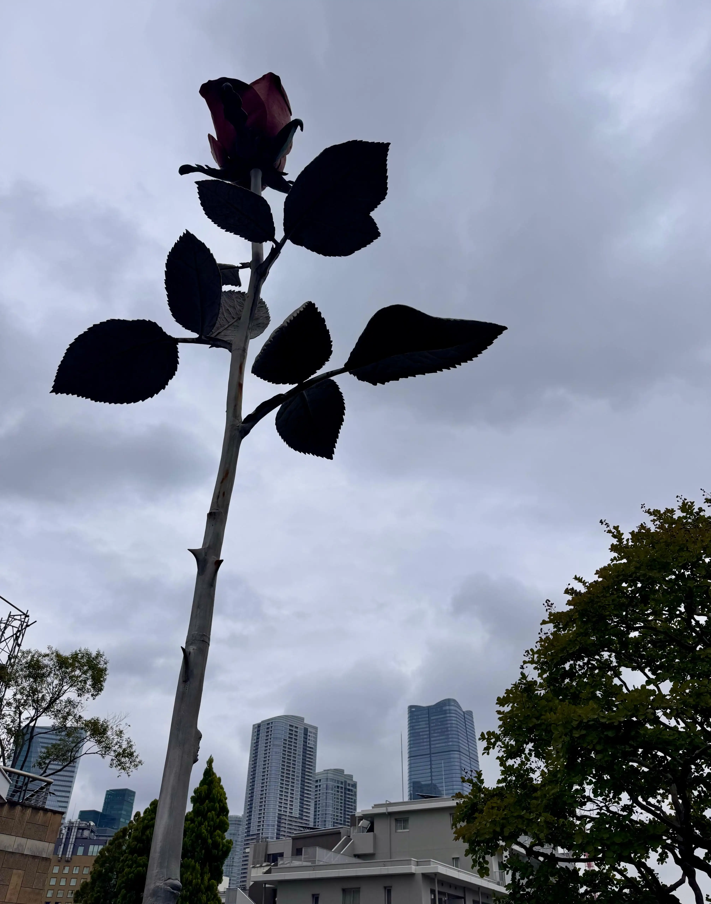
Unser letzter Stopp ist ein Zara, den wir natürlich in Deutschland überhaupt nicht haben. Aber das ist egal, denn letztendlich geht es hier immerhin nur darum, Zeit totzuschlagen. Und das hat gut geklappt: Als wir langsam ins Hotel zurückschlendern, ist es bereits sechs Uhr. Auch wenn es noch relativ früh ist, ziehen wir uns einfach auf der Toilette im Hotel um. Raus aus den klammen Sachen, hinein in unsere Flug-Kleidung, dann schnallen wir unsere Rucksäcke um und schurren, schwer beladen, hinaus aus dem Hotel.
Ein letztes Mal über die bekannte Kreuzung, ein letztes Mal durch die volle U-Bahn, ein letztes Mal irritiert fragen, ob diese Linie auch wirklich zum Flughafen fährt (immer noch traumatisiert vom letzten Jahr, wo wir uns komplett verfahren hatten und mit schwerem Gepäck vollkommen gestresst durch Tokios Vororte sind).
Dieses Mal ist der Weg unkompliziert, und nach einer knappen Dreiviertelstunde sind wir bereits im gigantischen Flughafen. Die letzten Yen lasse ich im 7/11 und kaufe uns unser Lieblings-Mochi-Eis. Ein letztes Mal. Ein letztes Mal meinen Matcha trinken, ein letztes Mal die freundlichen Floskeln mit dem Personal austauschen, ein letztes Mal verwirrt vor der Gepäckabgabe stehen, bei der wir wieder irgendwelche Regeln nicht beachten. Daumen drücken, dass er auch wirklich heil in Bremen landet und dass das Kerlchen keine zu große Angst da drinnen hat.
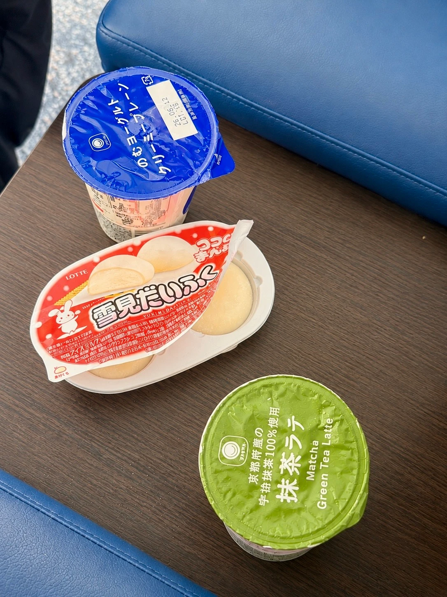
Dann lässt es sich nicht weiter herauszögern, und ich gehe durch die Sicherheitskontrolle. Wir lesen noch ein bisschen, während wir auf den Flug warten und mein Herz ist schwer. Es war eine wunderbare Zeit. Besser noch als der erste Urlaub. Wir haben so viele Facetten von Japan gesehen, nette und eigenartige Begegnungen gehabt, wir haben toll gegessen und neue Dinge ausprobiert. Wir sind 70 km Rad gefahren und noch mal 10 auf Kinderrädern. Wir haben Kunst gesehen, Kultur gesehen (auch Kleidung ist Kultur!) und waren vielleicht nicht komplett abseits der Touristen-Routen unterwegs, aber immerhin etwas weiter im Land als viele andere. Auch dieses Mal gab es viele kulturelle Unterschiede und sicher Momente, in denen die Japaner gedacht haben, wie blöd wir Ausländer uns anstellen.
Aber ich hoffe wirklich, dass ich genau das noch einmal erleben darf, dass es nicht mein letzztes Mal in Japan war. Dazu mag ich dieses Land zu gerne. Auf dass dies nicht der letzte Blog aus Japan war! Bis dahin, sayonara!